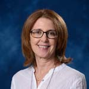
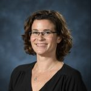
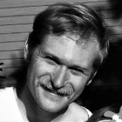

2016-2017

George Atkins received grant to develop Open Educational Resources for Writing 102

Trey Bagwell received grant to develop Open Educational Resources for Writing 250
Keith Boran was promoted to Lecturer

Sheena Boran helped to create online writing instruction resource guide

Kerry Bowers received grant to develop Open Educational Resources for Writing 250
Bill Boyle saw his novel Gravesend published in French by François Guérif

Michelle Bright served as a representative for Oxford High School drama department at Mississippi Delta Tennessee Williams Festival in Clarksdale, Mississippi.
Jenny Bucksbarg presented Prezi presentation regarding FASTrack vs. non-FASTrack students and their ability to critically think and write about race at National Civil Rights Conference in Meridian, Mississippi.

Gretchen Bunde received special acknowledgement for teaching excellence

Dixon Bynum received 2015-2106 Tennessee Arts Commission Individual Artist Grant for Creative Non-fiction

Brad Campbell gave keynote presentation "The Hats We Wear and the Jobs We Share." Writing Center Association Annual Conference. Mississippi State University. Starkville, MS. April 16, 2016
Emily Cooley conducted volunteer tutoring for high school students and Leap Frog in Oxford, Mississippi.

Betty Crane published a booklet of our writing with her writing group and donated proceeds to our local library in September 2016.

Andrew Davis completed APLU grant to develop adaptive composition course.

Dominiqua Dickey published God's Gonna Trouble the Water" in Mississippi Noir, edited by Tom Franklin, Akashic Books, 2016.
Chip Dunkin promoted to Lecturer.

JoAnn Edwards planned and executed the Speaker’s Edge competition for 2017.

Sean Ennis published “Hope and Wild Panic” short story on Amazon Digital Services.
LaToya Faulk presented “Cultivating Reflective Consciousness in Freshman Composition: Classroom Partnerships with Writing Centers,” at the Conference on College Composition and Communication in Portland, OR, on March 15-18, 2017.
Shanna Flaschka is piloting a new textbook, Food: A Reader for Writers, for Writing 102 in Spring 2017.
Karen Forgette is teaching an Independent Study composition course for incarcerated women.

Jane Gardner relocated to Natchez, Miss where she has taken on an increased teaching load of WRIT 250 online.
Wendy Goldberg was promoted to Lecturer.

Shirley Gray organized INTERCOM, a student organization to foster social integration for students from other nations.

Angela Green presented “The Closed Fist and the Open Hand: The Art of Persuasion and HBO’s The Wire” at the College Composition and Communication Conference in Portland, Oregon, on 16 March 2017.

Meredith Harper is developing a proposal for a LIBA 102 course focusing on fashion.
Bill Hays is at drafting a creative writing project with the working title “The Divining Rod”
Virginia Henry published “The Blue Line Boy” and “A Long Tenebrae” in Big Muddy: A Journal of the Mississippi River Valley.
Alison Hitch presented “Zadie Smith’s White Teeth: The Indoctrination of the Son by the Father” at SAMLA 88 in Jacksonville, Florida. This is an abbreviated version of her forthcoming dissertation.
Kate Hooper directed True West at the Powerhouse, with a cast and crew of students and citizens from North Mississippi.
Whit Hubbard working on manuscript “Men’s Studies” for publication on Amazon.
Amie Irwin published “Sardis Song” and “Long Exposure Fireflies” in About Place Journal.
Jennifer Jackson presented at the PCA ACA Conference in Seattle as part of a Rhetoric & Composition panel on her use of NYT in the First Year Classroom.
Rachel Johnson presented “Inspiring Action by Enabling Agency in Interdisciplinary Advanced Writing Courses” at the Conference on College Composition and Communication in Houston, Texas.
Guy Krueger completed APLU grant to develop adaptive composition course.
Karla Lyles completed her PhD at NC State University.
Kellye Makamson presented "Civil Writing: Advocating for Change Through Teaching College Writing" at the 6th National Civil Rights Conference, June 19-22, 2016, Meridian, MS.
Kevin Malloy served as Speech and Debate judge for the University of Mississippi High School Speech and Debate Tournament.
Carrie McCormick helped to pilot HireVUE for Speech faculty.
Briana McCoy is redeveloping Writing 350 after returning from Japan.

Jane Meek relocated from Miami, Florida, to Brooklyn, New York, where she has volunteered as community organizer helping neighbors master effective written and spoken communication to participate in the political process.
David Miller won the 2016 Kramer Award for excellence in teaching.
Claire Mischker presented “De-mystifying the Writing Center and Empowering Writers: A Rhetorical Approach to Interdisciplinary Collaboration” at MSWCA.
Stephen Monroe selected as OER Research Fellow by the Open Education Research Group at BYU, sponsored Gates, Hewlett, and Lumen Foundations.
Ellie Moore co-presented "Ushering Students Toward Dynamic Presentations by Managing Anxiety" at DWR Fall Orientation.
Alice Myatt co-edited Writing program and writing center collaborations: Transcending boundaries (New York: Palgrave Macmillan).
Amber Nichols-Buckley presented “Global, Social, and Digital: Digital Tools and Strategies in the Writing Classroom” at the Conference on College Composition and Communication in Houston, Texas.
Sara Olsen drafting dissertation "Sex and Violence in Early American Literature About Slavery"
Jeanine Rauch is teaching Study USA course this summer in Austin, Texas.
Chad Russell continues to lead Assessment Committee and attended virtual conference for using Word Press in higher education.
Fara Shook received team grant to develop OER for WRIT 102 theme course for STEM students.
Beth Spencer "Recent Poetry and Fiction" presentation with Bill Boyle, Sean Ennis and Whit Hubbard at the 2017 Annual Meeting of the Southeastern Writing Center Conference, February 16-18, 2017, Oxford, MS.
Steffen Brendan received team grant to develop OER for WRIT 102 theme course for STEM students.
Colleen Thorndike developed “Comp Quest” video game to gamify the composition classroom for greater student engagement.
Mary Brooks Tyler came back from extended personal leave to help FASTrack students in one-to-one conferences.
Marc Watkins finalist for the St. Lawrence Book Award.
Sarah Wilson presented "The Emphasis Shifts: Social Media and Sentence Construction." Presentation given at the PCA/ACA 2017 Annual Conference, April 12-15, 2017, San Diego, CA.

Henry Wise was hired for full-time teaching position at Virginia Military Institute.

Debra Yancy is helping to design Speech 305.
Joe Zendarski continuing study of contemporary poetry, ecocritical writing with a focus on the construction of the American identity in relation to nature, and the farm to table movement.